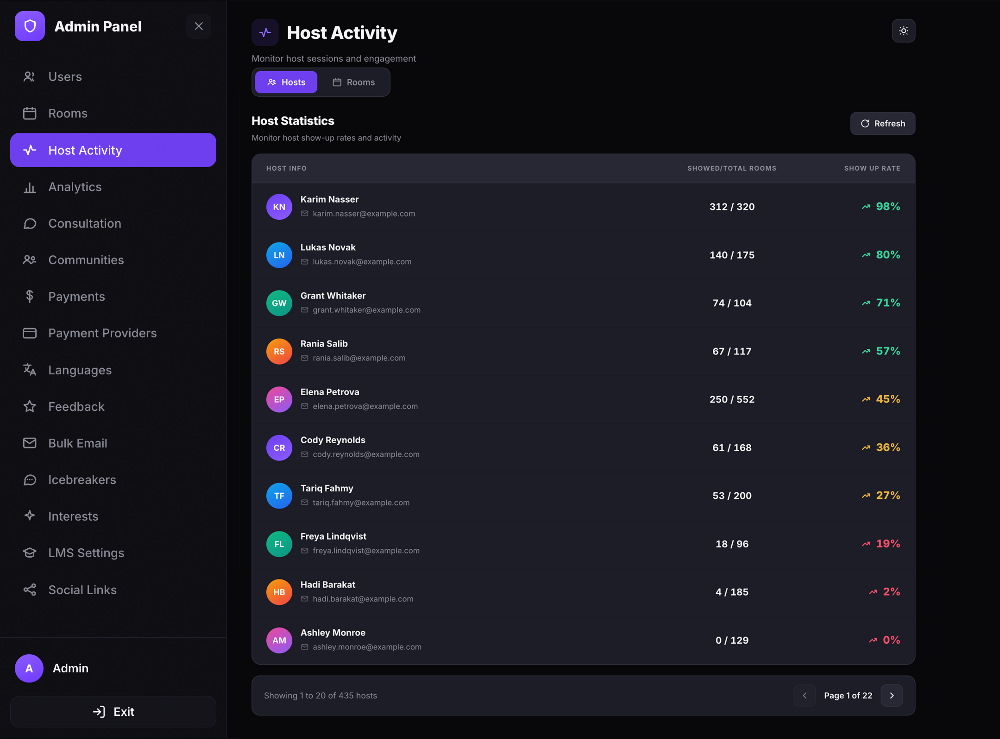
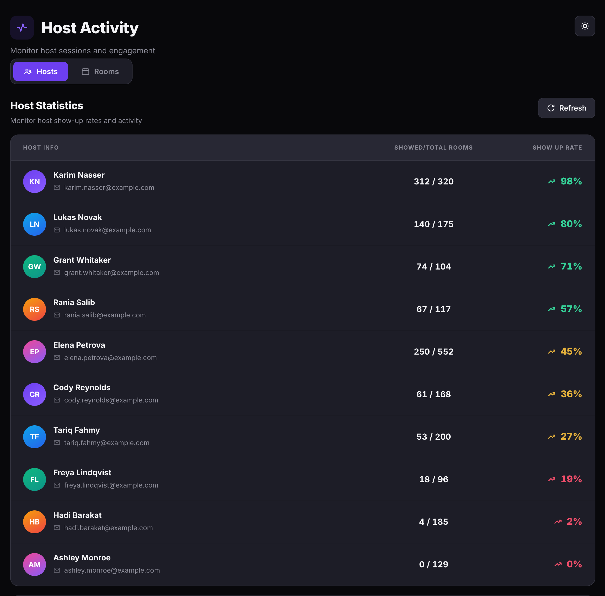
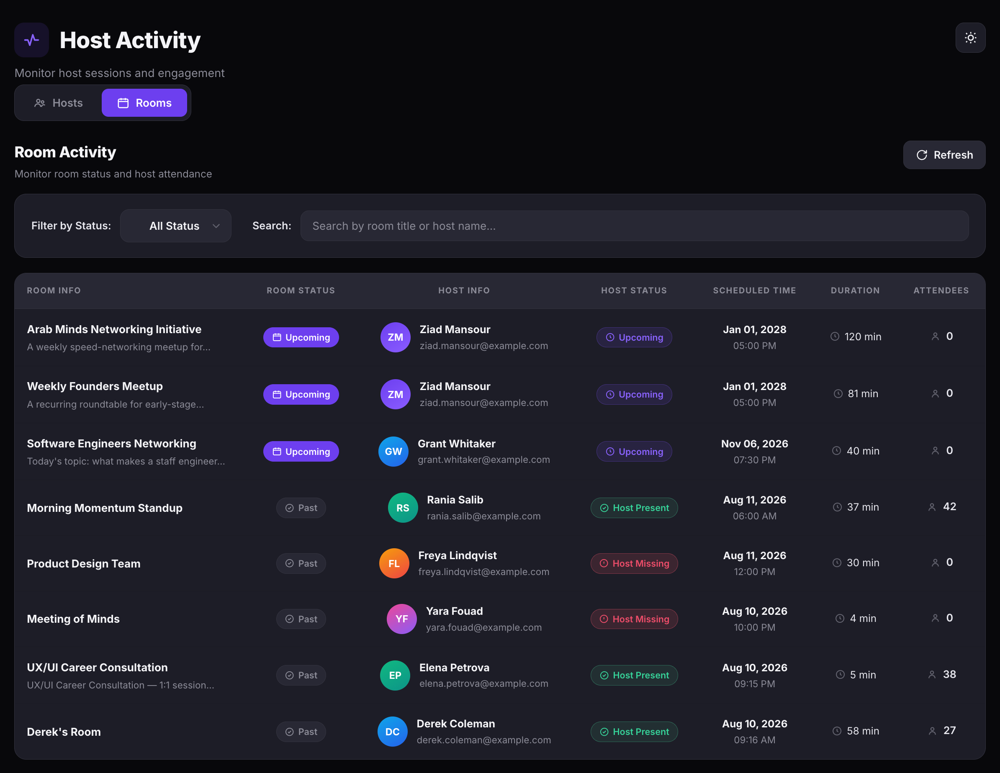

Monitor host activity
Track host show-up rates and room attendance across your platform. Use the Host Activity page to identify no-shows, monitor room status, and keep your event schedule healthy.
Open the Host Activity page
- Open the Admin Panel.
- Click Host Activity in the left sidebar.
The Host Activity Monitoring page has two tabs: Hosts and Rooms. A Refresh button in the top-right corner reloads the data on either tab.

View host statistics
The Hosts tab displays a Host Statistics table that tracks each host's attendance record. Each row shows:
| Column | Description |
|---|---|
| Host Info | The host's avatar, display name, and email address. |
| Showed / Total Rooms | The number of rooms the host actually attended out of the total rooms they created (e.g. 1 / 3 means the host showed up for 1 out of 3 scheduled rooms). |
| Show Up Rate | The host's attendance percentage. Displayed in red when below 100% to flag unreliable hosts. |

View room activity
Click the Rooms tab to switch to the Room Activity view. This table shows every room on the platform with its current status and host attendance. Each row shows:
| Column | Description |
|---|---|
| Room Info | The room title and description preview. |
| Room Status | The room's current state: Upcoming (scheduled), Past (ended), or Live Now (in session). |
| Host Info | The host's avatar, name, and email address. |
| Host Status | Host Present (green) means the host attended. Host Missing (red) means the host did not show up. Upcoming (purple) means the room hasn't started yet. |
| Scheduled Time | The date and time the room was scheduled to start. |
| Duration | The planned length of the room in minutes. |
| Attendees | The number of participants who joined the room. |

Filter and search rooms
- To filter by status, click the Filter by Status dropdown and select one:
- All Status — shows every room regardless of status.
- Live Now — shows only rooms currently in session.
- Upcoming — shows only rooms scheduled for the future.
- Past — shows only rooms that have already ended.
- To find a specific room, type a room title or host name into the Search field.